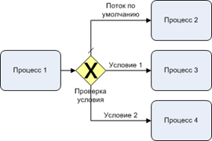
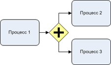
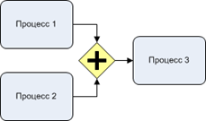
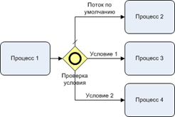
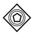
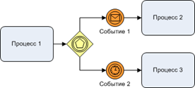
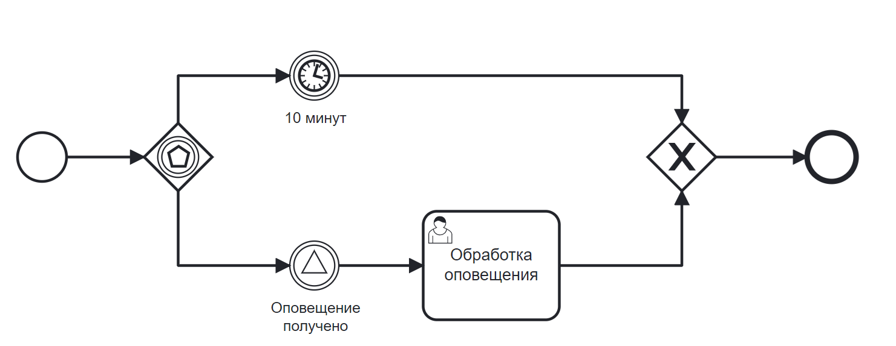

Шлюзы
Шлюзы контролируют поток движения в процессе. Они позволяют моделировать решения на основе данных и событий, а также параллелизм разветвления/соединения.
|  | Эксклюзивный шлюз (Exclusive Gateway, исключающий) «или/или» — выбор только одного пути |
|
|   | Параллельный шлюз (Parallel Gateway), «и» — выбор всех путей; |
|
|  | Инклюзивный шлюз (Inclusive Gateway, неисключающий, неэсклюзивный), «и/или» — выбор одного или нескольких; |
|
|  |  | Шлюз, основанный на событиях (Event Gateway) — выбор первого события, которое случится |
{kind=link}
{kind=link}
{kind=link}
{kind=link}
{kind=link}
{kind=link}
{kind=link}
{kind=link}
{kind=link}
Выбор вида шлюза:
{kind=link}
Шлюзом по умолчанию является эксклюзивный.
Эксклюзивный шлюз (XOR)
Эксклюзивный шлюз (также называемый шлюзом XOR или, говоря более технически, эксклюзивным шлюзом на основе данных) используется для моделирования решений в процессе.
Когда выполнение процесса достигает этого шлюза, все исходящие потоки управления оцениваются в том порядке, в котором они были определены. Поток управления, условие которого оценивается как «истинное» (или который не имеет набора условий, концептуально имеющий «истинное» значение), выбирается для продолжения процесса.
Обратите внимание, что при использовании эксклюзивного шлюза выбирается только один поток управления. В случае, если несколько потоков управления имеют условие, которое оценивается как «истина», для продолжения процесса выбирается только первый, определенный в схеме.
Если поток управления не может быть выбран (ни одно из условий не оценивается как «истина»), это приведет к исключению во время выполнения процесса, если вы не определили поток по умолчанию. Один поток по умолчанию может быть установлен на самом шлюзе в случае, если никакое другое условие не соответствует — например, «else» в языках программирования.
{kind=link}
Настройка шлюза:
{kind=link}
Параллельный шлюз
Параллельный шлюз (также называемый шлюзом AND), который позволяет разветвляться на несколько путей выполнения процесса или объединять несколько входящих путей выполнения процесса.
Функциональность параллельного шлюза основана на входящем и исходящем потоках управления:
разветвление: все исходящие потоки управления выполняются параллельно, создавая одно параллельное выполнение для каждого потока управления.
соединение: все одновременные выполнения, поступающие на параллельный шлюз, ожидают на шлюзе до тех пор, пока не будет выполнено выполнение процесса для каждого из входящих потоков управления. Затем процесс продолжается за присоединяющимся шлюзом.
Обратите внимание, что параллельный шлюз может иметь как разветвление, так и объединение, если для одного и того же параллельного шлюза существует несколько входящих и исходящих потоков управления. В этом случае шлюз сначала соединит все входящие потоки управления, а затем разделит их на несколько параллельных путей исполнения.
Важным отличием от других типов шлюзов является то, что параллельный шлюз не оценивает условия. Если условия определены для потока управления, связанного с параллельным шлюзом, они просто игнорируются.
Фактическое поведение (разветвление, объединение или и то, и другое) определяется потоком управления, подключенным к параллельному шлюзу.
{kind=link}
Настройка шлюза:
{kind=link}
Инклюзивный шлюз
Инклюзивный шлюз можно рассматривать как комбинацию эксклюзивного и параллельного шлюзов.
Подобно эксклюзивному шлюзу, вы можете определить условия для исходящих потоков управления, и инклюзивный шлюз оценит их. Инклюзивный шлюз может принимать более одного потока управления, как и параллельный шлюз. Функциональность инклюзивного шлюза основана на входящих и исходящих потоках управления:
разветвление: все исходящие условия потока управления оцениваются, и для условий потока управления, которые оцениваются как «истина», потоки выполняются параллельно, создавая одно параллельное выполнение для каждого потока управления.
соединение: все одновременные выполнения, поступающие на инклюзивный шлюз, ожидают на шлюзе до тех пор, пока не произойдет выполнение процесса для каждого из входящих потоков управления, имеющих токен процесса. Это важное отличие от параллельного шлюза. Другими словами, инклюзивный шлюз будет ждать только выполнения входящих потоков управления. После присоединения процесс продолжается за пределами инклюзивного шлюза присоединения.
Обратите внимание, что инклюзивный шлюз может работать как с разветвлением , так и с присоединением , если для одного и того же инклюзивного шлюза существует несколько входящих и исходящих потоков управления. В этом случае шлюз сначала присоединит все входящие потоки управления, имеющие маркер процесса, а затем разделит их на несколько параллельных путей выполнения процесса для исходящих потоков управления, условие которых оценивается как «истина».
Фактическое поведение (разветвление, объединение или и то, и другое) определяется потоками управления, подключенными к инклюзивному шлюзу.
{kind=link}
Настройка шлюза:
{kind=link}
Шлюз на основе событий
Шлюз, основанный на событиях, позволяет принимать решения на основе событий.
Каждый исходящий поток управления шлюза должен быть подключен к Intermediate Catch Event. Когда выполнение процесса достигает шлюза, основанного на событиях, шлюз находится в состоянии ожидания: выполнение процесса приостанавливается. Кроме того, для каждого исходящего потока управления создается подписка на события.
{kind=link}
Обратите внимание, что потоки управления, выходящие из шлюза, основанного на событиях, отличаются от обычных потоков управления. Эти потоки управления фактически никогда не «выполняются». Наоборот, они позволяют обработчику процесса определять, на какие события должно подписаться выполнение процесса, прибывающее к шлюзу, основанному на события.
Применяются следующие ограничения:

Шлюз должен иметь два или более исходящих потока управления.
За шлюзом могут следовать только элементы типа Intermediate Catch Event (Получение задач после шлюза на основе событий еще не поддерживается движком.)
Промежуточное событие CatchEvent, подключенное к шлюзу, должно иметь один входящий поток управления.
{kind=link}
Настройка шлюза:
{kind=link}
Процесс является примером процесса со шлюзом на основе событий. Когда выполнение достигает шлюза, основанного на событиях, выполнение процесса приостанавливается. Кроме того, экземпляр процесса подписывается на событие сигнала предупреждения и создает таймер, который срабатывает через 10 минут. Это фактически приводит к тому, что обработчик процесса ожидает сигнального события в течение десяти минут. Если сигнальное событие происходит в течение 10 минут, таймер отменяется и выполнение продолжается после сигнала. Если сигнал не запущен, выполнение продолжается после таймера, и подписка на сигнал отменяется.